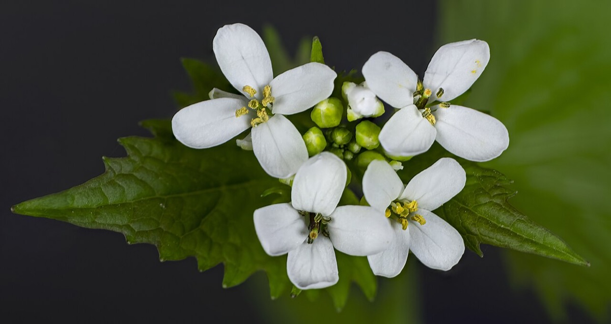
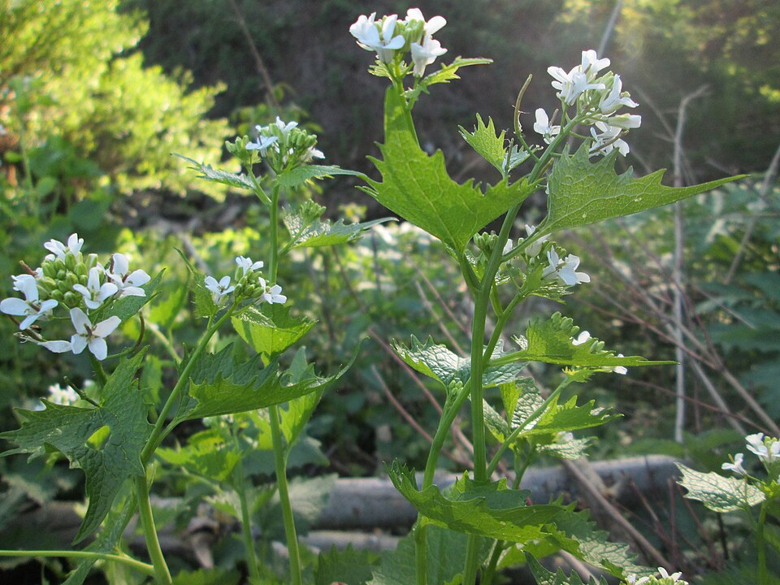

Garlic Mustard
Alliaria petiolata


- Kind
- herb · Brassicaceae
- Legal status
- Tier 3 on the Agency of Agriculture quarantine list; the VTinvasives page calls it Quarantined: Class B Noxious Weed (checked 2026-10-30)
- Look-alikes
- Violets (Viola species); Toothwort (Cardamine concatenata; a native it displaces)
Names
Garlic mustard, Alliaria petiolata. A biennial: it spends its first year as a rosette and its second year flowering, setting seed and dying.
Range
Abandoned and agricultural fields, edges, open disturbed areas, pasture, rights-of-way, roadsides, vacant lots, yards and gardens. It also invades wooded areas, including high-quality mature woodland, because it tolerates shade. County distribution is not recorded here.
How to identify (by season; look-alikes and the key difference)
- The smell is the best field check: crush any part and it smells of garlic.
- First year: rosette of green, heart-shaped leaves, 1 to 6 inches, becoming more triangular and strongly toothed as the plant matures.
- Second year: a flowering stalk 1 to 4 feet tall; four-petaled white flowers.
- After flowering: erect, slender pods that turn black and then pale brown; by late June most plants have died but the stalks stay up.
- Look-alikes: violets and the native toothwort. The page pictures them without describing the differences; rely on the garlic smell and on the second-year stalk and pods. Toothwort is a native that garlic mustard is displacing, so check before pulling anything in a spring woodland.
Through the year
Dates are typical for Vermont and shift with elevation and year; "approximate" means the source gave a season and the dates are a translation of it.
| When | What | Look for | What to do | Dates |
|---|---|---|---|---|
| Mar 25 to May 15 | rosette (identify) | Low rosettes of green, heart-shaped, scalloped leaves 1 to 6 inches long, among the first plants to green up; crush a leaf and it smells of garlic. | - | approximate |
| Apr 15 to May 31 | survey (control) | The state's advice if resources are limited: target second-year plants in spring. | Hand-pull before seed set, contain the plants, and do not leave them where seed can ripen; follow up for years (seed persists over 10 years). | approximate |
| Apr 25 to Jun 5 | flower (identify) | Second-year plants send up a stalk 1 to 4 feet tall with clusters of small white flowers, each with four petals. | Pull second-year plants before they set seed; bag them. | approximate |
| May 15 to Jun 30 | fruit (identify) | Slender, erect green pods that turn shiny black and then pale brown as the seeds mature. | - | approximate |
| Jun 25 to Sep 30 | die-back (identify) | By late June most plants have died, but the dry pale-brown pod stalks stand through summer and may still hold viable seed. | - | stated |
Habitat and spread
A prolific seeder that can self-pollinate. Seeds can persist in the soil for more than 10 years. The page treats seeds as a high risk for spread, including on boots and equipment.
Damage
Forms dense stands that shade out native understory plants. It produces compounds that inhibit seed germination of other species, and its roots secrete chemicals that inhibit nearby plants and may disrupt mycorrhizal associations. A search summary of the VTinvasives species spotlight adds that a compound in the leaves, which toothwort lacks, is toxic to the larvae of the West Virginia white butterfly; that was not on the page read.
What helps it spread (not something to encourage)
This is an invasive species, so nothing here is advice to encourage it. What the sources read say about where it grows and how it spreads is in the sections above; what they say about stopping it is under Control. The Vermont Landowner's Guide, chapter 17 (corrective strategies for invasive species), covers general methods for invasive plants and pests.
Control (by method, timing, follow-up, what not to do)
- Timing and target: treatments work best before plants go to seed. If resources are limited, target second-year plants in spring, since first-year rosettes have high over-winter mortality.
- Hand-pulling is the main method for small infestations. Pulling and digging disturb soil and can stimulate the seed bank; the page warns mechanical work can cause more disturbance than leaving a site alone.
- Disposal: contain and solarize removed plant material, because seeds can develop even after the plant is pulled. A search summary of a state document says to double-bag and send to the trash as a last resort and not to compost fresh plants; that was not on the page read.
- Chemical: not while flowering; cut first to delay flowering, then apply the lowest effective volume; use only products labeled for the species; applicator certification, Endangered Species Protection Bulletin checks, drift precautions, wetland permits and a 200-foot setback from Public Water Source Protection Areas (unless the Water Supply Division is notified) apply.
- Other: locally adapted plants set out at high density after treatment may outcompete it. Spring harvest for cooking is suggested as a control approach. Goats can be trained to graze it, which may reduce seed production but will not reach the roots. Four weevils that appear to feed only on garlic mustard are in testing; none is available.
- Follow-up: several seasons, because of the seed bank.
Legal status
Tier 3 on the Agency of Agriculture quarantine list, and a Class B Noxious Weed on the VTinvasives page. The Agency does not manage established plants. Confirm the rule text before moving or selling plants or soil containing it.
Sources
- Vermont Agency of Agriculture, quarantine list: https://agriculture.vermont.gov/node/11701 (read 2026-10-30)
- Vermont Invasives, Garlic Mustard: https://www.vtinvasives.org/invasive/garlic-mustard (read 2026-10-30, no update date shown; contains an error noted above)
- Vermont Invasives search summaries (not read in full): "Species Spotlight: Garlic Mustard"; "Bud Buds and Garlic Mustard"
What this page is based on
Kind of source: mixed (status from the Agency of Agriculture page; identification and control from the VTinvasives species page, which has a known error noted below)
What was read: The VTinvasives species page for garlic mustard and the Agency of Agriculture quarantine page, read through summarizing fetches on 2026-10-30. The page gives no month for rosettes, bolting or flowering ('early spring' for flowers) and no last-updated date; its pod-timing sentence (beginning in May) is for the mid-Atlantic Coast Plain, not Vermont, and the 'late June' die-back figure is stated on the page. The page's habitat and life-cycle sections refer to Euphorbia cyparissias (cypress spurge), which is a different plant: those sentences were ignored. The calendar dates marked approximate translate those seasons into Vermont dates and may need adjusting by elevation.
Last checked: 2026-10-30
Vermont Woodland Owner's Reference, built 2026-11-09. Rules and dates here are summaries, not legal advice; dates shift with elevation and year. Photo and recording credits · The text is by Loop Works, CC BY 4.0 (pictures and recordings keep their own licenses) · Note: _reference/US-VT/Invasives/Garlic Mustard.md